Voice
The bird makes the brand instantly expressive and replaces the “O” without compromising the wordmark.
A bright, modular identity inspired by the way birds sing, move and reveal their character through color.
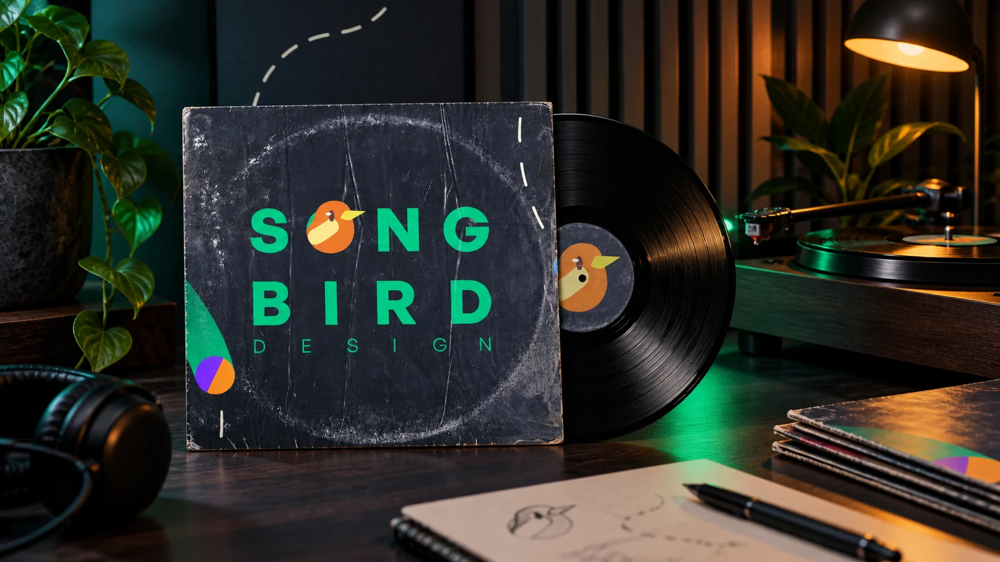
Translate the fluidity of birdsong into a visual system that can move between music, culture and studio communication.
Songbird began as a self-initiated identity concept for a music-focused design studio. The challenge was to connect something organic and expressive with the clarity required of a working creative brand.
The answer combines a compact bird symbol, bold typography, flight-path gestures and a vivid five-color palette. Each element can perform alone, but becomes stronger when it joins the complete system.
“Just as a bird’s voice merges with its beauty, design meets music in one shared rhythm.”
The bird makes the brand instantly expressive and replaces the “O” without compromising the wordmark.
Curved forms and broken white paths introduce movement, direction and a sense of discovery.
Independent colors and forms work together like distinct voices inside the same composition.
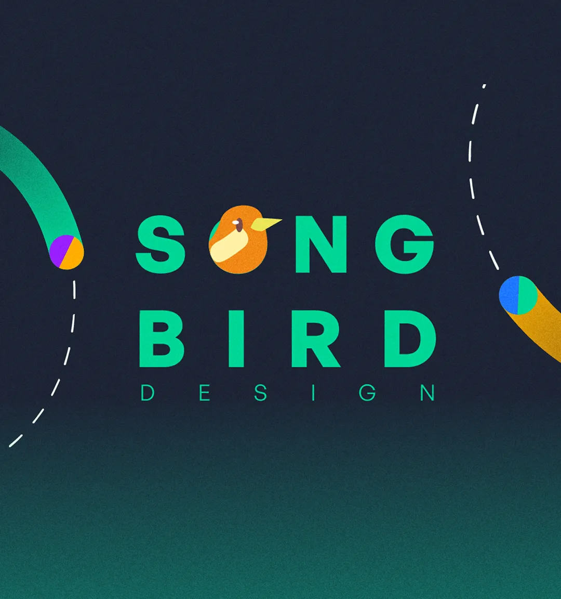
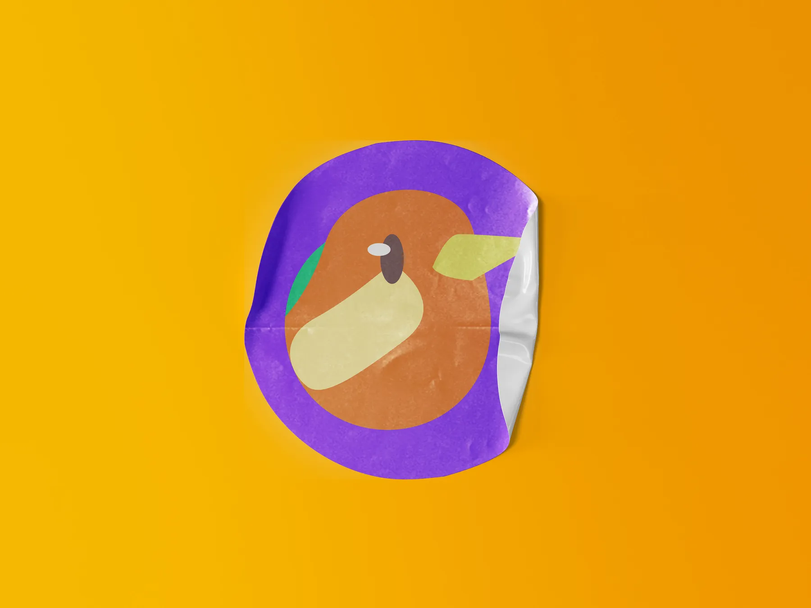
The midnight ground behaves like a stage. Green leads the identity, while amber, violet and cobalt punctuate each composition with musical contrast.
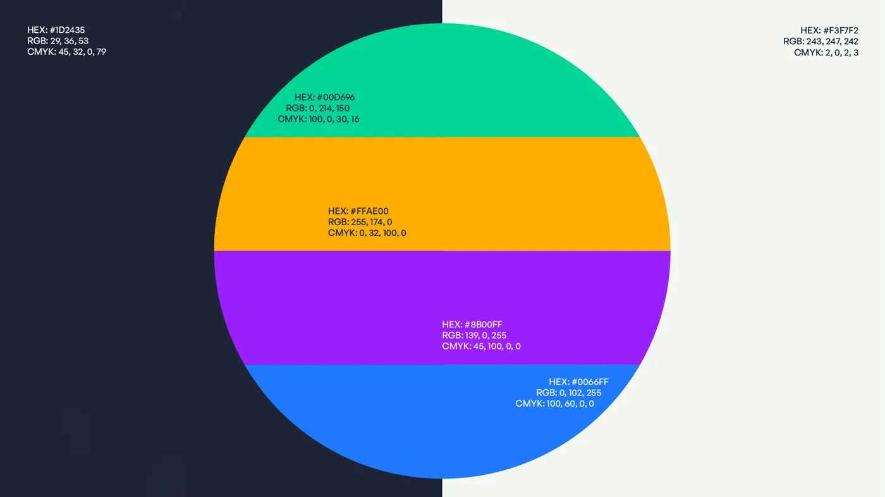
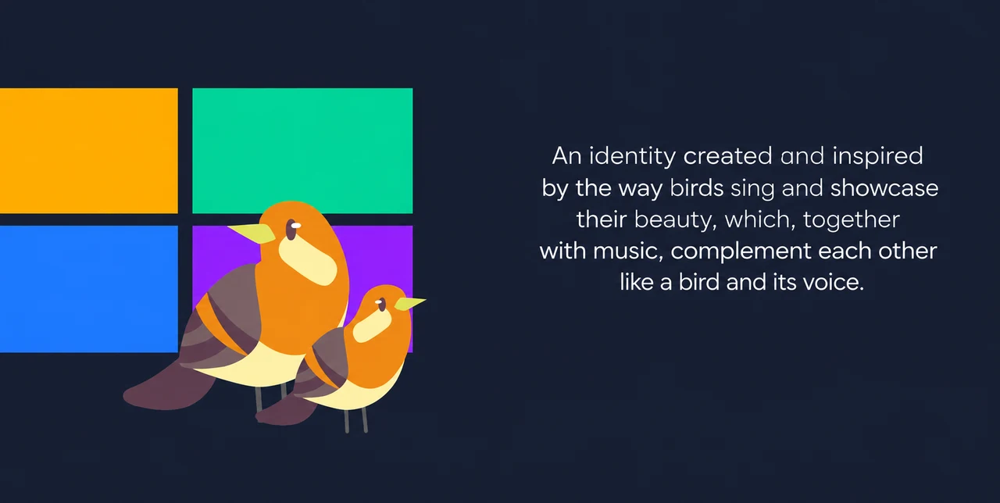
The flight path is more than decoration: it gives the identity a repeatable behavior. The bird can enter, pause, change direction and reconnect compositions across screens and physical formats.
The identity was tested from intimate listening objects to public campaign scale. Existing design pieces and new portfolio visualizations show how the system stretches without losing its voice.
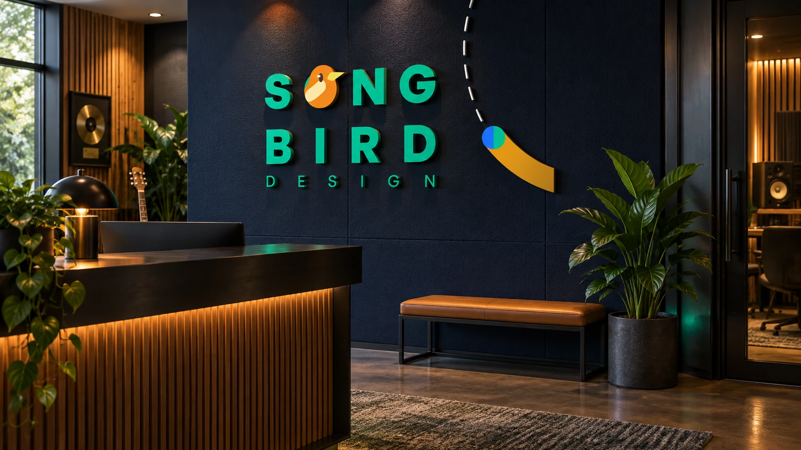
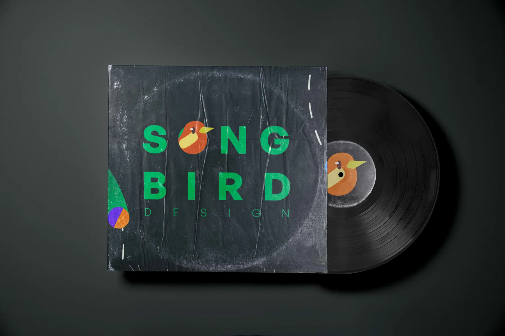
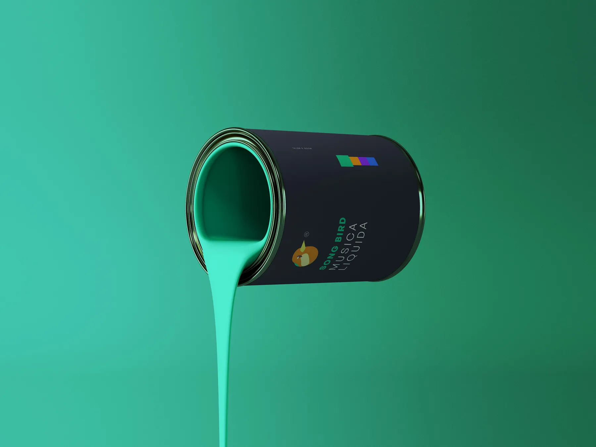
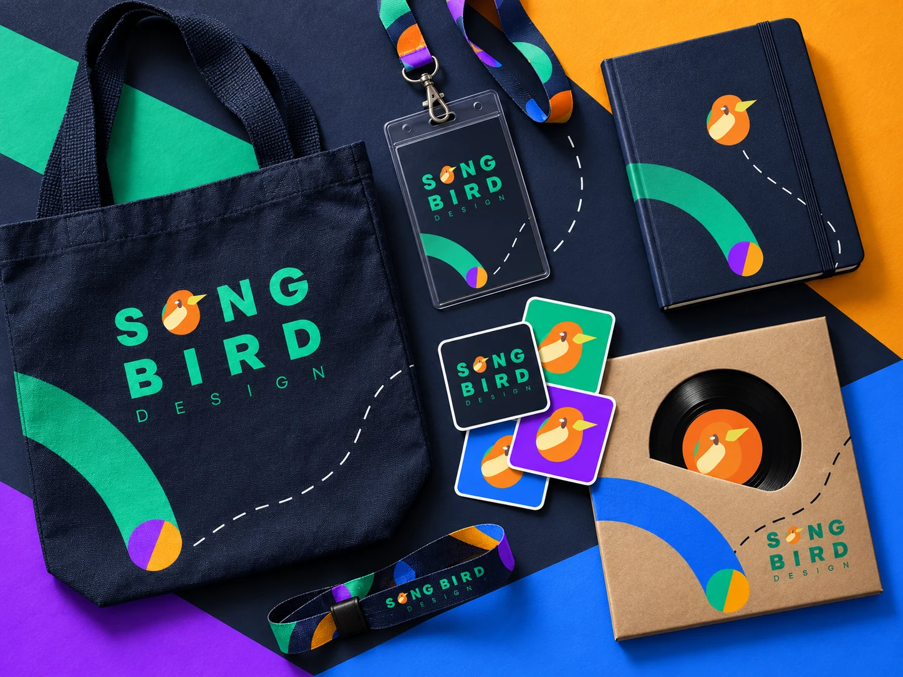
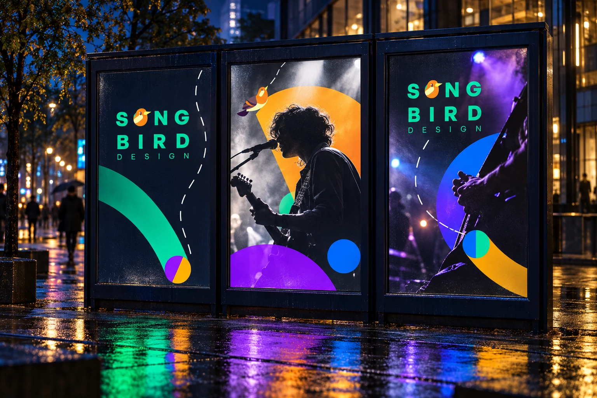
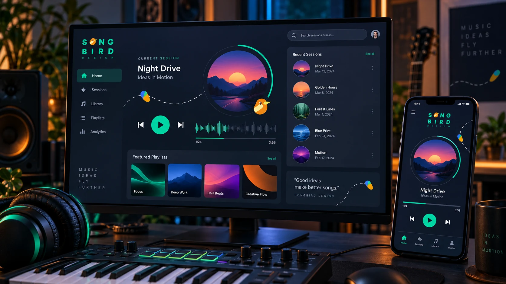
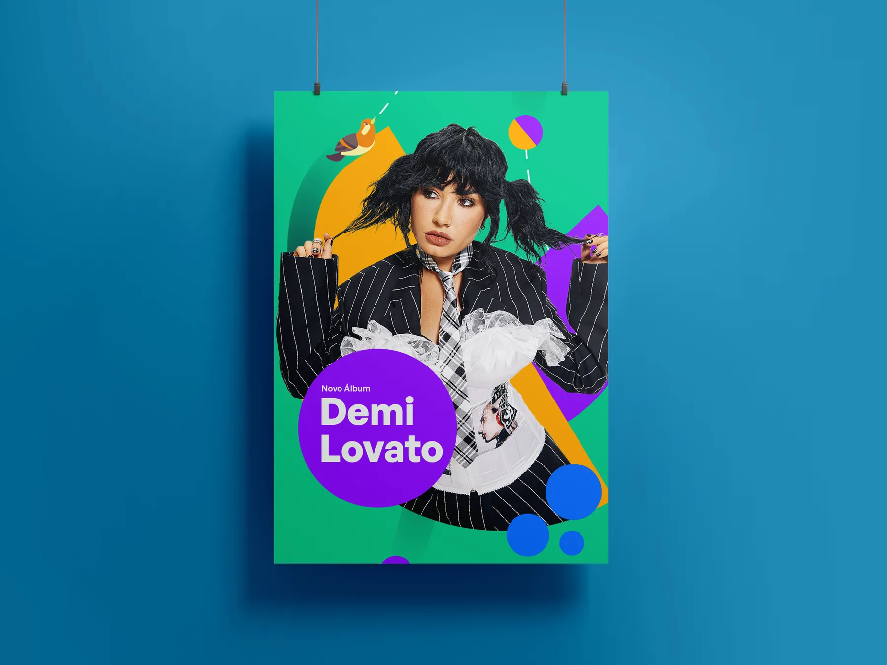
Songbird’s strength comes from one simple relationship: voice and movement. That idea keeps the project coherent even when the medium, color balance or scale changes.